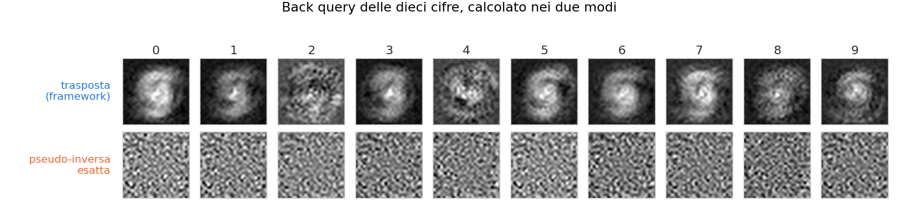

Laboratorio 16
Inferenza, Back Query e Visualizzazione dei Risultati
Soluzione del Laboratorio 15
Lo schema di ogni studio di performance — un parametro alla volta, seme fisso, clear() fra le iterazioni:
E la variante sul learning rate, che non ricostruisce nulla:
Dai dati doveva emergere che i nodi danno rendimenti decrescenti, mentre il learning rate ha un massimo intorno a 0.3 e poi peggiora.
Obiettivo di Oggi
Ultimo laboratorio. La rete è addestrata e i pesi sono su disco: adesso la usiamo, e proviamo a guardarci dentro.
- Inferenza su cifre scritte da voi, non da MNIST.
- Back Query: invertire la rete per vedere come immagina ogni cifra.
- Visualizzazione in Python dei dati del Lab 15.
Task 1: Caricare il modello addestrato
Niente addestramento oggi: si riparte dai pesi salvati.
Vale la pena fermarsi un secondo su questa riga: model è stata costruita vuota, e load_model ha ricreato da sola tre o quattro layer del tipo giusto, con le dimensioni giuste, con i pesi giusti. È tutta la macchineria del Factory Method del Lab 11 che ripaga adesso.
Warning
Se avete addestrato con Sequential<float> non potete ricaricare in Sequential<double>: il file contiene i numeri, non il tipo. Usate lo stesso ntype con cui avete salvato.
Task 2: Inferenza su cifre vostre
Scrivete dieci cifre a mano, fotografatele o disegnatele, e salvatele come PNG 28×28 nella cartella MY_NUMBERS/.
std::vector<std::string> files = {"zero.png", "uno.png", "due.png", "tre.png",
"quattro.png", "cinque.png", "sei.png",
"sette.png", "otto.png", "nove.png"};
for (auto& f : files) f = "./MY_NUMBERS/" + f;
MnistDataset<mytype> my_dataset(files); // costruttore da lista di immagini
Matrix<mytype> inputs(784, 1);
for (size_t i = 0; i < files.size(); i++) {
my_dataset.show_elem(i); // guardiamola
auto elem = my_dataset.getelem(i);
// La STESSA normalizzazione del training: [0.01, 0.99]
inputs = Matrix<mytype>((elem.pixels.template cast<mytype>() / 255.0 * 0.99)
.array() + 0.01);
Matrix<mytype> op = model.forward(inputs);
typename Eigen::Index max_idx, dummy;
op.matrix().maxCoeff(&max_idx, &dummy);
std::cout << files[i] << " -> classificato come: " << max_idx << "\n";
}L’errore numero uno
Important
La normalizzazione in inferenza deve essere identica a quella del training. È l’errore numero uno del machine learning applicato: una rete addestrata su input in [0.01, 0.99] e interrogata con input in [0, 255] produce risultati casuali, senza dare alcun errore.
Vale per ogni trasformazione applicata ai dati: media e deviazione standard dello z-score, dimensione delle immagini, ordine dei canali. Il dataset di addestramento e quello di inferenza devono passare per lo stesso codice.
Perché le vostre cifre vanno peggio
Non stupitevi se l’accuratezza sulle vostre dieci cifre è molto più bassa del 95% misurato sul test set. Le immagini MNIST sono state preprocessate in modo molto specifico:
- la cifra è centrata rispetto al centro di massa dei pixel
- è scalata perché stia in un box di 20×20, dentro un’immagine 28×28
- è bianca su fondo nero, con antialiasing
Una foto fatta col telefono non ha nessuna di queste proprietà. È il classico distribution shift: il modello non è sbagliato, sono gli input che vengono da una distribuzione diversa da quella di addestramento.
L’opencv_wrap del framework contiene già le funzioni per centrare e riscalare (processMultipleDigits, il calcolo del centro di massa con i momenti): usatele e l’accuratezza risale.
Task 3: Implementare il Back Query
Qui facciamo una cosa insolita e molto istruttiva: invertire la rete. Invece di chiedere “che cifra è questa immagine?”, chiediamo “che immagine rappresenta al meglio la cifra 3?”.
È l’unico pezzo del framework che ancora non avete scritto. Si aggiunge a quattro classi, e in nessuna supera le cinque righe.
1. L’interfaccia, in layer.hpp. Non tutti i layer sono invertibili (tanh non lo implementa), quindi il default è un errore esplicito:
Task 3 (segue): il DenseLayer
2. DenseLayer: di nuovo la trasposta — ma per una ragione diversa da quella del backward, e fra qualche slide vedremo quale. Serve un membro privato Matrix<ntype> inputs per il risultato, e una normalize():
private:
Matrix<ntype> inputs; // il buffer del back query
void normalize(void) {
ntype m = inputs.minCoeff();
inputs.array() -= m;
ntype M = inputs.maxCoeff();
inputs.array() /= M;
inputs.array() *= static_cast<ntype>(0.98);
inputs.array() += static_cast<ntype>(0.01); // -> [0.01, 0.99]
}
public:
Matrix<ntype>& back_query(const Matrix<ntype>& outp) override {
inputs = Wt.transpose() * outp;
normalize();
return inputs;
}Task 3 (segue): Sigmoid e Sequential
3. SigmoidLayer: il logit, funzione inversa della sigmoide (serve un membro Matrix<ntype> inputs):
\[ \sigma^{-1}(y) = \ln\!\left(\frac{y}{1-y}\right) \]
4. Sequential: il ciclo del backward, con back_query:
Matrix<ntype>& back_query(const Matrix<ntype>& outp) override {
if (layers.empty())
throw std::runtime_error("[ERROR] back query su una rete vuota.");
Matrix<ntype>* current_outp = &layers.back()->back_query(outp);
for (int i = static_cast<int>(layers.size()) - 2; i >= 0; --i)
current_outp = &layers[i]->back_query(*current_outp);
return *current_outp;
}Il logit è esatto — la sigmoide è biunivoca su \((0,1)\) — ed è per questo che i target valgono 0.01 e 0.99, mai 0 e 1: log(0/1) sarebbe \(-\infty\).
Task 3 (verifica): cosa immagina la rete
Matrix<mytype> targets(10, 1);
Matrix<int> inputs_int(784, 1);
for (int n = 0; n < 10; n++) {
std::cout << "Così la rete immagina il numero: " << n << "\n";
targets.setConstant(0.01);
targets(n, 0) = 0.99; // "voglio che l'uscita sia n"
Matrix<mytype> bq = model.back_query(targets);
for (int i = 0; i < 784; i++)
inputs_int(i, 0) = static_cast<int>(bq(i, 0) * 255.0);
test_dataset.show(inputs_int);
}Cosa si vede
Vedrete una macchia centrale sfocata e fantasmatica, con una struttura interna in cui a volte si riconosce il tratto della cifra — l’anello dello 0, la barra dell’1. Quanto sia leggibile dipende dal modello: con 200 nodi nascosti le forme sono più granulose, con 1000 più tondeggianti. Quello che conta, e che le prossime slide rendono quantitativo, è che ci sia struttura e non rumore: è la prova che la rete non ha memorizzato 60.000 esempi, ma ha costruito un prototipo interno di ogni cifra.
È l’esperimento del libro di Rashid, e vale più di qualunque metrica per capire cosa la rete ha davvero imparato.
Perché la trasposta e non la pseudo-inversa
Il back query chiede l’inverso del forward: dato \(\mathbf{z} = \mathbf{W}\mathbf{x}\) con \(\mathbf{W}\) di forma \([m \times n]\) e \(m < n\), trovare \(\mathbf{x}\). Il sistema è sottodeterminato — le soluzioni sono infinite — e lo strumento standard è la pseudo-inversa di Moore-Penrose, che fra tutte sceglie quella di norma minima:
\[ \mathbf{W}^{+} = \mathbf{W}^{T}\,\mathbf{G}^{-1}, \qquad \mathbf{G} \equiv \mathbf{W}\mathbf{W}^{T} \quad [m \times m] \]
Il codice però non calcola nessuna inversa: usa \(\mathbf{W}^T\) e basta. Per capire perché è legittimo, guardiamo com’è fatta \(\mathbf{G}\): il suo elemento \((i,j)\) è il prodotto scalare \(\mathbf{w}_i \cdot \mathbf{w}_j\) fra i vettori dei pesi di due neuroni diversi.
- Sulla diagonale c’è \(\|\mathbf{w}_i\|^2\): una somma di \(n\) quadrati, che cresce come \(n\sigma^2\) ed è quasi la stessa per ogni neurone, perché l’inizializzazione dà a tutti la stessa varianza.
- Fuori diagonale c’è una somma di \(n\) termini di segno casuale, perché i pesi di neuroni diversi sono indipendenti: cresce come \(\sqrt{n}\,\sigma^2\).
La trasposta è la pseudo-inversa, a meno di un fattore
Il rapporto fra fuori-diagonale e diagonale è dunque \(\sim 1/\sqrt{n}\): per \(n\) grande
\[ \mathbf{G} \approx c\,\mathbf{I} \;\Longrightarrow\; \mathbf{G}^{-1} \approx \frac{1}{c}\mathbf{I} \;\Longrightarrow\; \mathbf{W}^{+} = \mathbf{W}^{T}\mathbf{G}^{-1} \approx \frac{1}{c}\,\mathbf{W}^{T} \;\propto\; \mathbf{W}^{T} . \]
E la costante \(c\) non conta: normalize() riscala tutto in \([0.01, 0.99]\) subito dopo, cancellando qualunque fattore moltiplicativo. La trasposta è la pseudo-inversa, a meno di un fattore che poi buttiamo via — ed è per questo che la normalize() non è un dettaglio cosmetico, ma la ragione per cui il conto sta in piedi.
Quanto è diagonale la matrice G?
Misuriamolo: rapporto fra lo scarto quadratico medio dei termini fuori diagonale e la media della diagonale.
| layer | \(1/\sqrt{n}\) atteso | a pesi iniziali | dopo l’addestramento |
|---|---|---|---|
| \(784 \to 200\) | 0.036 | 0.036 | 0.15 |
| \(200 \to 10\) | 0.071 | 0.066 | 0.075 |
A pesi iniziali l’accordo con \(1/\sqrt{n}\) è quasi perfetto, e la diagonale è uniforme entro il 30%: l’argomento di indipendenza funziona esattamente come previsto.
Dopo l’addestramento il primo strato peggiora di un fattore quattro: i 200 neuroni nascosti non sono più indipendenti, imparano tratti di penna sugli stessi pixel. L’ultimo strato invece resta in riga.
Note
Serve \(n\) grande. Su un layer con 3 ingressi e 2 nodi il rapporto vale \(\approx 0.55\), contro \(1/\sqrt{3} = 0.58\): la previsione è giusta, ma l’approssimazione non è affatto buona. È la stessa ragione per cui le fluttuazioni relative in un sistema di \(N\) particelle vanno come \(1/\sqrt{N}\) e contano solo per \(N\) grande.
E allora usiamo la pseudo-inversa esatta?
Verrebbe da pensare che dopo l’addestramento, con \(\mathbf{G}\) non più diagonale, convenga calcolare la pseudo-inversa vera. Succede il contrario:

La ragione è il condizionamento. Sul primo strato del modello addestrato gli autovalori di \(\mathbf{G}\) vanno da \(1.1\) a \(648\): numero di condizione \(614\), contro \(9\) a pesi iniziali. \(\mathbf{G}^{-1}\) moltiplica per \(1/\lambda\), quindi amplifica di 600 volte le direzioni con autovalore piccolo — che sono esattamente quelle in cui la rete non ha imparato niente. Il risultato è rumore.
La trasposta è una regolarizzazione
Sostituire \(\mathbf{G}^{-1}\) con \(c^{-1}\mathbf{I}\) — cioè usare la trasposta — è una regolarizzazione di Tikhonov. Si vede risolvendo
\[ \mathbf{x} = \mathbf{W}^{T}\left(\mathbf{G} + \lambda\mathbf{I}\right)^{-1}\mathbf{z} \]
al variare di \(\lambda\): per \(\lambda \to 0\) si ottiene la pseudo-inversa esatta, per \(\lambda \to \infty\) la trasposta. Sul modello addestrato, con \(\lambda\) pari a cento volte la media della diagonale di \(\mathbf{G}\), la correlazione con il risultato della trasposta è già \(0.999\); con \(\lambda = 0\) scende a \(0.33\).
La trasposta non è dunque una scorciatoia: è la scelta numericamente sana. È la stessa ragione per cui non si invertono a cuor leggero le matrici di covarianza, e per cui in un fit ai minimi quadrati mal condizionato si smorzano gli autovalori piccoli invece di fidarsi della soluzione esatta.
Task 4: Visualizzare i dati del Lab 15
I file .dat prodotti dal Lab 15 hanno due colonne separate da spazio:
10 0.9211
20 0.9481
50 0.966
100 0.9718
200 0.9753Uno script Python di poche righe, con matplotlib e la lettura file integrata — niente pandas:
Task 5: I tre grafici
fig, axes = plt.subplots(1, 3, figsize=(14, 4))
for ax, (path, xlabel, titolo) in zip(axes, [
("perf_vs_nodes.dat", "Nodi nascosti", "Performance vs Nodi"),
("perf_vs_learning_rate.dat", "Learning rate", "Performance vs LR"),
("perf_vs_epochs.dat", "Epoche", "Performance vs Epoche")]):
x, y = leggi_dat(path)
ax.plot(x, y, "o-", linewidth=2)
ax.set_xlabel(xlabel)
ax.set_ylabel("Performance (%)")
ax.set_title(titolo)
ax.grid(True, alpha=0.3)
plt.tight_layout()
plt.savefig("performance.png", dpi=150)
plt.show()Eseguite con python3 plot_performance.py.
Per il grafico dei nodi provate anche ax.set_xscale("log"): i valori {10, 20, 50, 100, 200} sono distribuiti logaritmicamente, e su scala lineare i primi punti si schiacciano tutti a sinistra.
Cosa deve mostrare il grafico
Se i vostri tre grafici raccontano questo, l’esperimento è riuscito:
Nodi — curva che sale e si appiattisce. Il ginocchio intorno a 50-100 nodi è il punto di equilibrio fra accuratezza e costo computazionale.
Learning rate — curva a campana, con un massimo. È la conferma sperimentale della figura della Lezione 3: passo troppo piccolo significa convergenza lenta, passo troppo grande significa scavalcare il minimo.
Epoche — salita rapida che poi rallenta. Se continuando ad addestrare la performance sul test set scendesse, quello sarebbe overfitting — con una rete così piccola su MNIST difficilmente lo vedrete, e serve l’augmentation (traccia 3) per renderlo evidente.
Checklist Finale del Corso
Il percorso completo
Sedici laboratori, da std::cout << "Hello" a una rete neurale che riconosce cifre scritte a mano al 95%, scritta interamente da voi:
Lab 02-04 le basi: tipi, funzioni, memoria cruda
Lab 05-06 incapsulamento e Regola del Tre
Lab 07-08 Eigen, attivazioni, inizializzazione dei pesi
Lab 09 il grande refactor: template e Matrix<ntype>
Lab 10 Rule of Zero: vector e unique_ptr
Lab 11 serializzazione e Factory Method
Lab 12 il dataset MNIST
Lab 13 backpropagation, loss, ottimizzatore
Lab 14 il Trainer e le metriche
Lab 15 studi di performance
Lab 16 inferenza e visualizzazioneNessuna libreria di deep learning: solo C++, Eigen per l’algebra e OpenCV per le immagini. Quello che avete costruito è, nella struttura, la stessa cosa che fa PyTorch — con qualche ordine di grandezza in meno di ottimizzazioni.